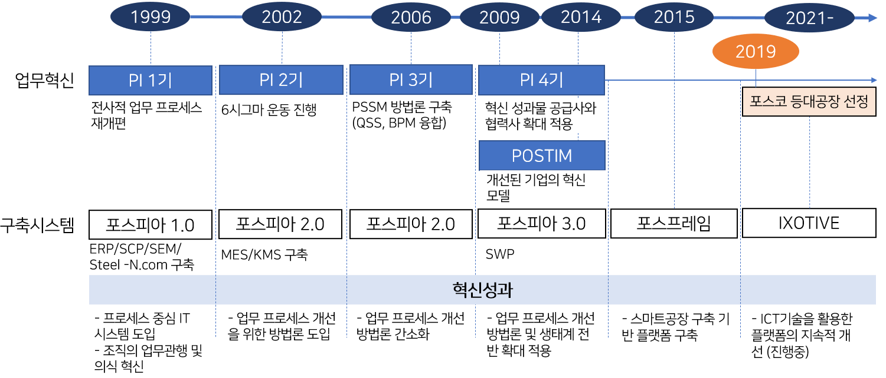
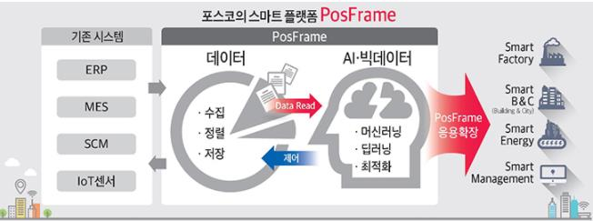
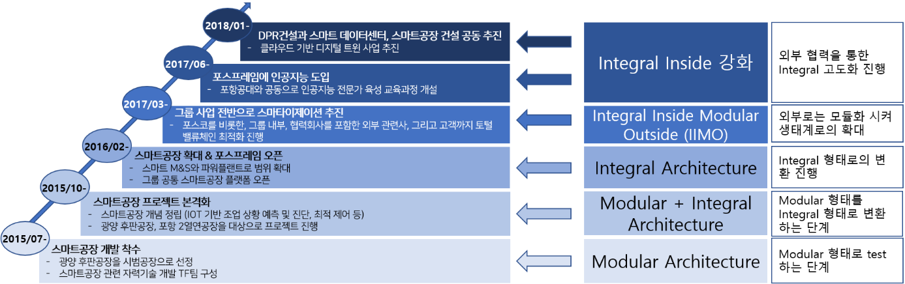
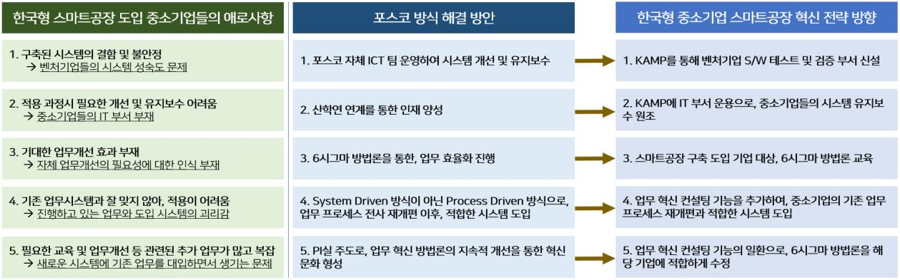

4차 산업 혁명 시대에 발맞추어 한국은 정부 주도의 스마트공장 보급 사업을 통해 중소 제조업의 역량 강화를 목표로 하고 있다. 그러나 도입한 기업의 대다수는 여전히 기초 수준에 머물러 있으며, 기존 업무와 시스템 간의 괴리로 인해 여러 가지 애로사항을 겪고 있다. 본 연구는 세계경제포럼(WEF)에서 선정한 '등대공장'에 국내에서 유일하게 이름을 올린 포스코의 스마트공장 구축 과정을 한국형 스마트공장 도입 현황과 비교 분석하고, 향후 한국형 스마트공장의 혁신 전략 방향을 제안한다.
- 4차 산업 혁명 시대에 발맞추어, 한국 제조업은 한국 산업 구조에 적합한 스마트공장 구축을 통해 제조업 경쟁력을 확보할 필요성이 제기되고 있다. 독일, 미국, 일본, 중국 등 제조 강국들은 자국의 산업 요인에 맞춘 스마트 제조 혁신을 추진하고 있으며, 한국은 중소기업의 스마트공장 보급 사업을 통해 제조업 역량을 강화하고자 한다.
- 그러나 스마트공장을 도입한 중소기업의 대다수는 기초 수준에 머물러 있으며, 대부분의 기업은 기존 업무와 시스템 간의 괴리로 인한 여러 가지 문제를 안고 있다.
- 본 연구는 스마트공장을 성공적으로 구축하여 세계 제조업을 선도하는 '등대공장'으로 선정된 포스코 사례를 중심으로 한국형 스마트공장 도입 현황과 포스코의 스마트공장 구축 과정을 비교 분석한다.
- 비교 결과, 한국형 스마트공장은 시스템 도입 자체에만 초점을 두고 있는 반면, 포스코는 업무 혁신과 시스템 도입을 병행하여 시스템과 현업의 정합성을 높였다는 차이가 확인된다.
- 이를 바탕으로 벤처 소프트웨어 검증 기능 신설, 유지보수 지원, 시스템 도입 전 업무 혁신 유도 등 한국형 스마트공장 혁신 전략의 방향을 제안한다.
1. 서론
유엔산업개발기구(UNIDO)의 세계 제조업 경쟁력지수(CIP Index)에 따르면, 한국은 전세계 152개국 중 3위의 제조업 경쟁력을 보유하고 있다. 그러나 세계시장 점유율 1위 품목 수의 정체, 숙련 기술자 공급의 정체와 해외 이전에 따른 제조업 공동화가 급격히 진행 되고 있어 제조업 혁신을 통한 경쟁력 확보가 절실한 상황이다. 독일(정부 주도 공적 표준화), 미국(대기업 주도 시장 기반 표준), 일본(JIT·카이젠을 보완하는 느슨화 표준), 중국(정부 차원 중점 산업 중심) 등 주요 제조 강국들은 자국 산업의 제약 요인에 부합하는 스마트 제조 전략을 적극적으로 추진하고 있으며, 한국 또한 정부 주도로 중소기업 중심의 스마트 제조 혁신 정책을 시행하고 있다. 이와 함께, 세계경제포럼이 2018년부터 선정하는 '등대공장'에는 국내에서 유일하게 포스코가 선정되어 스마트공장 구축의 우수 사례로 평가받고 있다.
2. 한국형 스마트공장 도입 현황
정책 발전 과정과 수준별 보급 현황
2014년 6월, 산업통상자원부는 '제조업 혁신 3.0' 전략을 발표하고 2020년까지 중소 제조기업 1만개의 공장을 스마트화하기 위한 스마트공장 추진단(현 스마트제조혁신추진단)을 신설하였다. 2018년에는 이 목표를 3만 개로 확대하고, 전문 인력 10만 명 양성과 6.6만 개의 일자리 창출, 18조 원의 매출 증가를 목표로 설정하였다. 2020년에는 민관 협력 제조 특화 플랫폼인 KAMP (Korea AI Manufacturing Platform)를 구축하여 데이터와 AI 중심의 고도화를 지원하고 있다. 스마트제조혁신추진단은 도입 단계를 기초, 중간1, 중간2, 고도화로 구분하고, FA, MES, ERP, PLM, SCM 등 5개 솔루션 공급 중심의 중소기업 맞춤 전략을 수립하였다. 그러나 2019년 기준으로 도입 기업 11,488개 중 8,941개(77.8%)가 기초 단계에 머물러 있으며, MES와 ERP 도입 등 데이터 중심의 스마트화는 매우 미흡한 수준이다.
중소기업의 인식과 애로사항
2019 중소기업 정보화 수준 조사에 따르면, 중소기업의 CEO 및 임원 중 81.2%가 정보화에 대한 인식이 매우 높음에도 불구하고, 실제로 정보화를 위한 업무 혁신을 실행하는 중소기업은 12.5%에 불과하였다. 또한, 정보시스템 도입이 업무 효율성 향상에 기여하는 정도는 약 30% 수준으로 낮게 평가되었다. 스마트공장을 도입한 기업들은 ① 구축된 시스템의 결함 및 불안정성, ② 개선 및 유지보수의 어려움, ③ 기대했던 업무 개선 효과의 부재, ④ 기존 업무 시스템과의 부조화로 인한 적용의 어려움, ⑤ 교육 및 업무 개선 등으로 인한 추가 업무의 복잡성이라는 문제를 안고 있었다. 이와 같은 시스템 결함이나 유지보수의 어려움뿐 아니라, 기대한 효과의 부재와 기존 업무와의 부조화로 인해 추가 업무가 증가하는 현상은 ICT 기술과 실무 간의 거리감을 나타낸다.
3. 포스코 스마트공장 구축 과정
1968년 국영기업으로 설립된 포항종합제철(포스코)은 2000년 완전 민영화 이후 2020년 기준으로 매출액 57조 7,928억 원, 영업이익 2조 4,030억 원에 달하는 대규모 철강사로 성장하였다. 국내 조강 시장에서 점유율 1위를 기록하고 있으며, 세계 철강 생산량에서 5위를 차지하고 있다. 또한, WSD 철강 경쟁력 평가에서는 수년간 1위 자리를 유지하고 있다.
1999년에 시작된 포스코의 업무 혁신(PI, Process Innovation)은 민영화에 대비하여 생산자 중심의 사고에서 고객 지향으로의 전환을 도모하였으며, 유럽과 일본 경쟁업체의 합병 및 대형화, 그리고 최대 고객인 현대자동차 그룹의 자체 용광로 가동으로 심화된 경쟁에 대응하기 위해 본격적으로 추진되었다. 포스코는 PI 1기부터 4기까지 2~3년 단위로 업무 혁신을 이루어냈고, 이를 바탕으로 적합한 시스템을 도입하여 2015년에는 스마트공장 플랫폼인 '포스프레임'을 성공적으로 도입하였다.

PI 1기부터 POSTIM까지
PI 1기(1999-2001)는 유상부 회장의 강력한 추진력과 지원을 바탕으로 PI실을 발족하였으며, 이를 통해 전사 프로세스를 백지 상태에서 재점토하고 고객 중심의 프로세스와 경영 시스템을 구축하였다. 전사적 통합 온라인 경영 시스템인 포스피아(POSPIA)가 가동됨에 따라 열연 제품의 납품 시간은 30일에서 14일로 단축되어 비즈니스 속도가 획기적으로 향상되었다. PI 2기(2002-2005)에서는 6시그마가 도입되어 업무 방식의 변화를 이끌었으며, MES와 고객 관계관리 시스템이 구축되었다. 2007년에는 전사 직원의 35.6%, 팀장 이상 직원 중 80%가 6시그마 벨트를 보유하였고, 1차~8차 Wave까지 총 7,126개의 과제를 수행하여 7,308억 원의 재무 성과를 창출하였다. 그러나 무겁고 어려운 6시그마 방법론은 모든 직원의 참여를 어렵게 만드는 문제를 남겼다.
PI 3기(2006-2008)에서는 소수의 엘리트와 핵심 과제 위주의 전통적인 6시그마 접근 방식에서 벗어나, 현장의 70%에 해당하는 운영자들이 쉽고 빠르게 진행할 수 있는 QSS (Quick Six Sigma)를 개발하였다. 또한, 이를 BPM과 결합하여 포스코 고유의 PSSM (POSCO Six Sigma Model)을 구축하고, 학습 동아리 문화를 통해 이를 정착시켰다. 3기가 마무리된 2008년에는 매출액 30조 6,420억 원에 달하며, 영업이익은 전년 대비 51.8% 늘어난 6조 5,400억 원을 기록하였다. PI 4기(2009-)와 POSTIM(2014-)은 혁신적인 성과와 노하우를 계열사, 협력사, 고객사까지 확산시키는 상생 전략을 추진하며, PSS+, QSS+, SWP 세 가지 활동을 통해 품질 부적합률 22%, 설비 장애율 32%, 휴업 도수율 39% 감소(2013년 대비) 및 불필요한 문서 300만 건 감축 등의 성과를 달성하였다.
포스프레임에서 IXOTIVE까지
포스프레임(PosFrame)은 철강제품 생산 과정에서 발생하는 대량의 데이터를 수집, 정렬 및 저장하고, 고급 데이터 분석 기술과 인공지능을 적용하여 품질 예측 및 설비고장 예지 모델을 개발하기 위한 포스코의 고유한 스마트공장 플랫폼이다. 포스코는 2015년 7월 광양 후판공장을 시범 공장으로 선정하여 개발을 시작하였으며, 같은 해 10월에는 포항 2열연공장으로 프로젝트를 확장하고 스마트 솔루션 카운실(SSC)을 발족하여 전사 및 그룹사 전체로 범위를 넓혔다. 2016년부터 2019년까지 진행된 321건의 스마트 과제를 통해 2,500억 원의 원가 절감을 이루었다. 2021년에는 포스프레임에 설비 제어장치 포스마스터와 음성 인식 설비 제어 보리스를 추가한 차세대 플랫폼 IXOTIVE를 CES 2021에서 최초로 소개하였다.

4. 포스코 혁신 사례의 이론적 분석
반복적 테스트와 검증을 통한 업무 혁신과 시스템 도입
포스코의 혁신 방식은 Rogers가 제시한 발산 실험 방식(Divergent Experimental Method)과 Eric Ries의 린 스타트업 피드백 루프(Lean Startup Feedback Loop)를 융합한 형태를 취하고 있다. PI 1기에서는 고객 중심 프로세스 재설계와 전사 조직 개편을 통해 포스피아 1.0에 적합한 체제를 구축하였으며, 2기에서는 6시그마를 도입하고, 3기에서는 현장에 맞게 재구성한 PSSM을 도출하였다. 이후 4기부터는 POSTIM 방법론을 추가적으로 개선하여 문제를 정의하고 지속적으로 개선해 나가고 있다.
단계적 아키텍처 혁신을 통한 안정적 스마트공장 구축
포스코의 스마트공장 구축은 초기 단계부터 모든 시설을 스마트화하는 빅뱅 전략이 아닌, 광양 후판공장에서 소규모로 시작하였다. 이 과정은 Modular 형태의 안정적 평가를 바탕으로 한 것이며, 이후 포항 2열연공장으로 확대하여 공장 간 연결의 복잡성을 점검하였다. 이러한 점검을 통해 전체 공장을 유기적으로 연결하는 포스프레임 플랫폼을 개발하여 Integral 형태로 전환하였다. 이후, 그룹 전체의 스마트화 과정에서 협력회사와 고객을 포함한 생태계의 가치사슬을 최적화하고 외부 접합점을 모듈화한 Integral Inside Modular Outside (IIMO) 형태로 발전시켰다. 마지막으로 DPR건설과 협력하여 클라우드 기반의 디지털 트윈 스마트공장을 구축함으로써 내부 Integral 아키텍처를 더욱 강화하였다.

포스코의 상생형 혁신 전략(Open Innovation)
포스코는 내향형(Outside-in) 오픈 이노베이션 방식을 채택하여 산학연 협력을 통한 공동 연구와 중소벤처기업부 및 한국벤처캐피탈협회와의 업무 협약을 통해 유망 기업을 발굴하고 있다. 또한, 벤처 밸리와 벤처 펀드 운영을 기반으로 '포스코 벤처 플랫폼'을 조성하여 신성장 동력인 신수종 사업을 발굴하고 있다.
5. 한국형 스마트공장과 포스코 사례 비교
시스템 도입 과정에서 한국형 스마트공장은 업무 프로세스의 개선이 아닌 시스템 도입 자체에만 초점을 두고 있으며, 이는 현업의 업무 프로세스를 이에 맞추어 조정하는 구조를 지닌다. 반면, 포스코는 실무진들이 지속적인 피드백 루프를 통해 직접 업무 프로세스를 개선하고 이를 시스템 도입과 병행하여 업무의 정합성을 높였다. 아키텍처 관점에서 양측의 구축 단계는 동일하지만, 포스코는 업무 혁신을 통한 아키텍처 전환을 진행한 반면, 한국형 스마트공장은 업무 혁신이 배제된 아키텍처 전환에 그치고 있다. 기초단계 77.8%, 중간1단계 20.5%로 총 98.3%의 기업이 통합화를 진행하지 못하는 것은 업 무혁신의 결여, 또는 포스코와 같은 체계적 혁신의 부재로 나타나는 현상으로 판단할 수 있다. 기술 필터링 수단에서도 포스코는 자체 IT 조직인 Posco ICT를 통해 신기술을 검증하고 필터링하여 적용하지만, KAMP에는 벤처기업들이 공급하는 소프트웨어가 현업에서 안정적으로 실행되는지 테스트하고 검증할 중간 기관이 존재하지 않는다.
6. 한국형 스마트공장 혁신 전략 방향 제언
본 연구는 한국형 스마트공장의 문제점을 세 가지로 제시한다. 첫째, 반복적인 피드백 루프를 통해 시스템과 업무의 지속적인 개선이 이루어지지 않고 있다. 둘째, 포스코와 달리 업무 혁신을 동반하기보다는 오직 아키텍처 전환에만 초점을 맞추고 있다. 셋째, 중간 관리 기능이 부재하여 도입된 시스템 및 신기술을 적절히 필터링할 수 없는 상황이다. 현재 한국형 스마트공장은 제조 강국들의 트렌드를 단순히 모방한 인기 혁신 활동으로 비춰지며, 인프라 구축 중심의 완성도는 그리 높지 않은 편이다.

- 검증 기능의 신설: 시스템 결함 및 불안정 문제는 벤처기업들의 시스템 성숙도와 관련되어 있으며, KAMP에 벤처기업 소프트웨어 테스트 및 검증 부서를 신설하여 이를 개선할 수 있다.
- 유지보수 지원: 중소기업의 IT 부서 부재로 인한 유지보수의 어려움은 KAMP를 통한 시스템 유지보수 지원으로 보완될 수 있다.
- 업무 혁신 병행: 나머지 애로사항은 업무 혁신이 배제된 시스템 도입에서 비롯된 문제로, 스마트제조혁신단 차원의 6시그마 업무 혁신 방법론 교육과 함께 시스템 도입 이전에 중소기업 스스로 업무 혁신을 이루도록 유도하는 것이 필요하다.
- 한계 인식: 연속 공정 산업과 이산 산업의 특성 차이, 대기업과 중소기업의 규모 차이는 존재하지만, 신규 시스템 도입을 통해 업무를 효율화하고 기업 가치와 이윤을 증대시키려는 목적은 동일하다. 이러한 문제는 산업 특성이나 기업 규모와 별개로 분석되어야 한다.